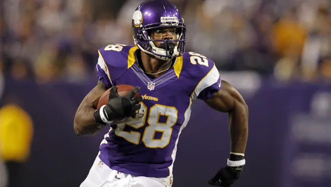
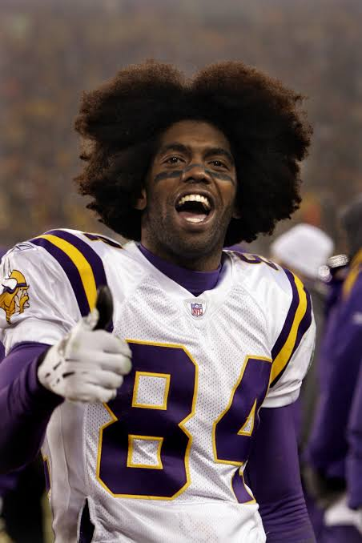

My Favorite Moments
- Minneapolis Miracle
- 33-point comeback against the Colts
- Jefferson's catch against the Bills

Adrian Peterson
Some say he is a top-5 running back of all time; AP is the greatest running back in Vikings history by a landslide. He is the last non-QB to win an MVP, and he carried the Vikings to the playoffs with no supporting cast. He was truly special to watch.
14,918 RUSH YDS | 120 RUSH TD | 2,474 REC YDS | 6 REC TD
2007 ROTY | 2012 OPOY | 2012 MVP | 7x Pro Bowl

Randy Moss
Randy Moss is one of the scariest wide receivers to ever play in the NFL. He is regarded as the 2nd-best receiver of all time. He holds the record for the most receiving touchdowns in a single season by a rookie with 20, and also the most in a season with 23. He is the reason for the phrase "Get Mossed."
982 REC | 15,292 YDS | 156 TD
1998 ROTY | 6x Pro Bowl | 4x All-Pro

Dallas Turner
He is the future face of the franchise that I have faith in. There isn't much to say about him yet, but he is going into his 3rd year, and I believe that Dallas Turner will be one of the best pass rushers to ever wear the purple and yellow.
12 SCK | 5 FF | 88 TKL | 1 INT